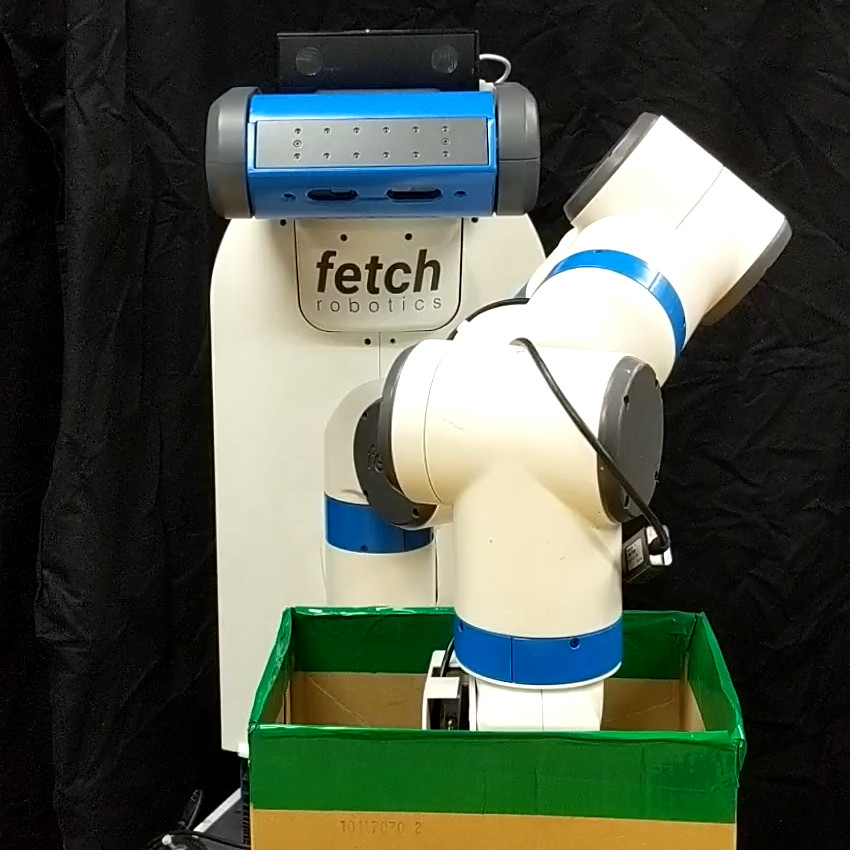

In recent years, robots are expected to do a variety of household chores. Among the tasks, we focus on daily assistance using bags because they are often used at everyday life. However, robots have difficulty in manipulating bags, which are deformable and difficult to see its inside during the manipulation. In this paper, we propose a solution for this problem by developing a gripper, on which proximity sensors are mounted on all sides. Use of this gripper enables robots to recognize the surroundings without contact even when they are unable to see it, and to manipulate objects in bags. We evaluate our method through an experiment in which a real robot picks an object from a flexible bag.
